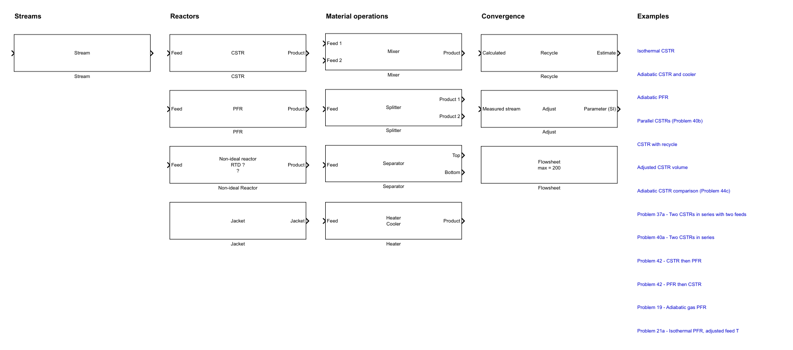

Place ideal and RTD-based reactors in the same Simulink diagram, connect them through named Streams, and inspect one consistent set of process results.
Start here: flowsheet actions open from the main Non-Ideal Reactor Plus screen, in the Flowsheet (Simulink) group.
Before You Start
Define the chemistry, feeds, operating basis, and whether each reacting unit should be ideal or described by a measured or modeled residence time distribution. The same Reactive System and Stream definitions serve every reactor block.
Recommended Workflow
1. Create or open a modelUse the flowsheet group in the main screen.
2. Define chemistry and feedsComplete the Reactive System and Feed dialogs.
3. Connect and specify blocksChoose ideal or non-ideal reactors, add process units, and close all specification gaps.
4. Run and inspect resultsReview unit results, Stream tabs, convergence, and messages.

The single library groups Streams, ideal and RTD-based reactors, material operations, and convergence blocks.
Which reactor block?
Block
Use it when
Main description
CSTR
The contents are ideally and uniformly mixed.
One ideal mixed-reactor balance at the outlet composition.
PFR
Axial mixing is negligible and the reaction follows the flow direction.
Ideal plug flow with axial composition and temperature profiles.
Non-ideal Reactor
A real unit is characterized by an RTD and needs an explicit micromixing assumption.
Segregation or maximum mixedness applied to a modeled, tabulated, or session RTD.
Engineering choice: use CSTR or PFR when an ideal pattern is justified. Use Non-ideal Reactor when measured hydrodynamics or an RTD model is part of the problem.
Numbered Chapters
Getting Started — create or open the diagram and recognize the library.
Reactive System — define components, reactions, kinetics, and thermodynamics.
Streams — configure feeds, products, and intermediate material connections.
Ideal Reactors — configure CSTR, PFR, and Jacket blocks.
Non-ideal Reactor — choose an RTD, micromixing model, size, temperature, and reactions.
Process Units — use Mixer, Splitter, Separator, and Heater.
Specifications — interpret missing, calculated, waiting, and conflict states.